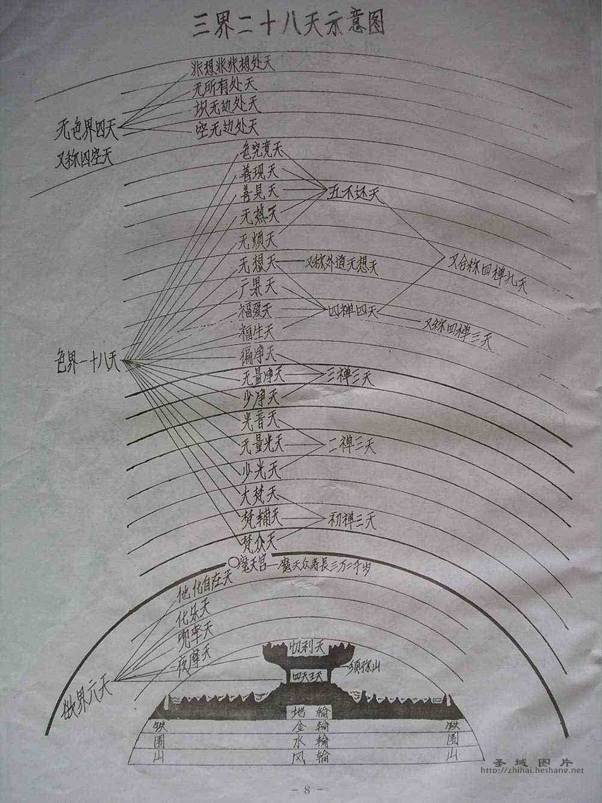

佛教的三界二十八天
谓欲界之六天、色界之十八天，与无色界之四天。
欲界六天即：
四王天、忉利天、夜摩天、兜率天、乐变化天、他化自在天。
色界十八天即：
梵众天、梵辅天、大梵天、少光天、无量光天、光音天、少净天、无量净天、遍净天、无云天、福生天、广果天、无想天、无烦天、无热天、善见天、善现天、色究竟天。
无色界之四天即：
空无边处、识无边处、无所有处、非想非非想处。

---------------------------------------------------------
三界二十八天
三界二十八天三界共有二十八天，即欲界六天，色界十八天，无色界四天。欲界六天是四王天、忉利天、夜摩天、兜率天、化乐天、他化自在天。色界十八天是梵众天、梵辅天、大梵天、少光天、无量光天、光音天、少净天、无量净天、遍净天、无云天、福生天、广果天、无想天、无烦天、无热天、善见天、善现天、色究竟天。无色界四天是空无边处天、识无边处天、无所有处天、非想非非想处天。在此三界二十八天中，只有欲界的四王天与忉利天，因依须弥山的地界而居，故称地居天，夜摩天以上，都是凌空而处，故名空居天。
┌四王天
│忉利天
┌欲界天———┤夜摩天
│ │兜率天
│ │化乐天
│ └他化自在天
│ ┌梵众天
│ ┌初禅—┤梵辅天
│ │ └大梵天
│ │ ┌少光天
二 │ │二禅—┤无量光天
十—┼色界天———│ └光音天
八 │ │ ┌少净天
天 │ │三禅—┤无量净天
│ │ └遍净天
│ │ ┌无云天
│ │ │福生天
│ │ │广果天
│ │ │无想天
│ └四禅—┤无烦天———┐
│ │无热天 │
│ │善见天 │——五净居天 (若不是修行净土法门，则从这里出离三界)
│ │善现天 │
│ └色究竟天——┘
│ ┌空无边处天
└无色界天——┤识无边处天
│无所有处天
└非想非非想处天 (成语：想入非非)
六欲诸天具五衰 三禅天上有风灾
任君修到非非想 不如西方归去来
欲界六天的时间、寿命、身长、衣重等
天上的时间：
人间五十年，为四天王天一昼夜。人间一百年，为忉利天一昼夜。人间二百年，为夜摩天一昼夜。人间四百年，为兜率天一昼夜。人间八百年，为化乐天一昼夜。人间一千六百年，为他化自在天一昼夜。
天人的寿命：
四王天人寿为五百岁（以本天时间为标准）。忉利天人寿为千岁。夜摩天人寿为二千岁。兜率天人寿为四千岁。化乐天人寿为八千岁。他化自在天人寿为一万六千岁。
天人的身长：
四王天人的身长半里。忉利天人的身长一里。夜摩天人的身长一里半。兜率天人的身长二里。化乐天人的身长二里半。他化自在天人的身长三里。
天衣的重量：
四王天衣十二铢（二十四铢为一两）。忉利天衣六铢。夜摩天衣三铢。兜率天衣一铢半。化乐天衣一铢。他化自在天衣半铢。
色界十八天的天人身长及寿命：
第一天梵众天身长半小由旬（二十里），天寿半小劫（八万三千九百九十岁）。第二天梵辅天身长一小由旬，天寿一小劫。第三天大梵天身长一由旬半，天寿一劫半。其余诸天以此为标准，依次类推。
无色界四天：
此界无身体，只有思想，可是有寿命：第一天空无边天寿为二万大劫，其余三天为四万、八万、十六万大劫。
---------------------------------------------------------
三界二十八天－－佛教的宇宙观之一
壹．前言
古德说：“无三界可出，无涅盘可入。”又说：“一念觉即超出三界，一念迷即堕入轮回。”
“三界”，是迷妄的有情在生灭变化中流转，依其境界所分的三个阶级，分别为欲界、色界、无色界。三界共有二十八天，称“三界二十八天”。三界的果报虽然各有优劣、苦乐等差别，但是都属于迷界，难脱生死轮回之苦，因此为圣者所厌弃。
《法华经·譬喻品》说：“三界无安，犹如火宅，众苦充满，甚可怖畏。”《化城喻品》说：“能于三界狱，勉出诸众生。”意思是劝三界诸有情莫以三界为安，当勤求解脱。因为三界迷苦的领域有如大海的无边无际，因此三界又称苦界、苦海。一般常说的“苦海无边，回头是岸”，便是劝人出离三界，勤求解脱涅盘之乐。
贰．三界
三界指众生所居住的欲界、色界、无色界。
1一、欲界
欲界指具有淫欲、情欲、色欲、食欲等有情所居住的世界。上自六欲天，中间包括人界四大洲、阿修罗，下至畜生、饿鬼、地狱等，因为此界为男女杂居，多诸染欲，因此称为欲界。
1二、色界
色界指远离欲界的淫、食二欲，但是仍然具有清净色质等有情所居住的世界。此界在欲界之上，没有欲染，也没有女形，众生皆由化生；色界的宫殿高大，由色所化生，一切殊妙精好。因为此界尚有色质，因此称为色界。
1三、无色界
无色界指唯有受、想、行、识四心，而没有物质生活的有情所居住的世界。此界没有任何物质之物，也没有身体、宫殿、国土，只有心识，住在深妙的禅定之中，因此称为无色界。
参．二十八天
二十八天指欲界的六欲天、色界的四禅十八天、无色界的四无色天。
1一、六欲天
欲界六天又分为地居天与空居天。
□地居天：包括四天王天、忉利天。
□四天王天：东为持国天，住须弥山黄金埵，由提头赖吒天王统领干闼婆（香 神或乐神）、富单那（热病鬼）二部。西为广目天，住须弥山白银埵，由毘留博叉
天王统领毗舍闍（噉精气鬼）、毒龙等。南为增长天，住须弥山琉璃埵，由毗留勒
叉天王统领鸠盘荼（厌魅鬼）、薜荔多（饿鬼）二部。北为多闻天，住须弥山水晶埵，由毗沙门天王统领夜叉、罗刹（速疾鬼）等二部。四天王天的各部合称天龙八部。
□忉利天：又名三十三天，在佛教的宇宙观中，此天位居欲界第二天的须弥山顶，中间为善见城，天主为释提桓因，四方各八天，共为三十三天。据《正法念处经》卷二十五所载，分别为：住善法堂天、住峰天、住山顶天、善见城天、钵私地天、住俱吒天、杂殿天、住欢喜园天、光明天、波利耶多树园天、险岸天、住杂险岸天、住摩尼藏天、旋行地天、金殿天、鬘影处天、住柔软地天、杂庄严天、如意地天、微细行天、歌音喜乐天、威德轮天、月行天、阎摩娑罗天、速行天、影照天、智慧行天、众分天、住轮天、上行天、威德颜天、威德焰轮天、清净天等。
地居天由于居于须弥山，因此名为地居，天神的男女淫事与人间无异。
□空居天：包括夜摩天、兜率天、化乐天、他化自在天。
□夜摩天：夜摩意思为时分，此天对于欲境知道节制有分，以相抱为淫事。
□兜率天：兜率意思为知足，对于欲境知道止足，以执手为淫事。
□化乐天：乐于变化，欲心微薄，以相笑为淫事。
□他化自在天：于五欲境界自在变化，欲心渐无，因此以相视为淫事。
1二、四禅十八天
色界四禅天依禅定的深浅粗妙而分四级，共有十八天。
□初禅三天：指梵众天、梵辅天、大梵天。初禅以上已不食人间烟火，因此没有鼻、舌二识，但是尚有眼、耳、身、意四识所生起的喜、乐二受，以及寻伺思惟的能力。
□二禅三天：指少光天、无量光天、光音天。二禅以上只有意识，没有眼、耳、身三识以及寻伺思惟，因此只有喜、舍二受与意识相应。
□三禅三天：指少净天、无量净天、遍净天。三禅天只有意识活动，与乐受、舍受相应。
□四禅九天：指福生天、福爱天、广果天、无想天、无烦天、无热天、善见天、
善现天、色究竟天等。四禅天只有与舍受相应的意识活动。
1三、四无色天
无色界的有情，虽然没有物质，但依定力相应而感得的业报有深浅不同，因此也分为四级。
□空无边处天：指厌于色身系缚，不得自在，欣求虚空无边，由加行入空无边处定为因，所得定地的果报。
□识无边处天：指厌离空无边处天，由识无边之定所招感的果报。也就是思惟清净眼、耳、鼻、舌、身、意等六种识之相，观察照了无边的识相，以先思惟无边的识相而修加行，展转引起第二无色定，称为识无边处。
□无所有处天：指厌患识无边处，舍诸一切所有，寂然安住不动，到了加行成就时，不但所思惟的空没有了，连观无边心识的能观心也没有，因此名无所有处天。
□非想非非想天：此天的定心，至极静妙，已无粗想，因此称为非想；此天尚有细想，因此称非非想。此天位于三界九地的顶上，因此又称有顶天。
肆．天界的殊胜
在十法界中，天道比邻人道，两者都是苦乐交集的地方，而且各有殊胜之处。根据经典所载，天人有以下几点殊胜：
1一、寿命长久
欲界六天中，四天王天寿命五百岁，约等于人间九百万岁；忉利天寿命一千岁，约等于人间三亿六百万岁；夜摩天二千岁，约为人间十四亿四百万岁；兜率天四千岁，约为人间五十七亿六百万岁；化乐天八千岁，约为人间二百三十亿岁；他化自在天一万六千岁，约为人间九百二十一亿六百万岁。
色界天中，初禅的梵众天寿半劫，梵辅天一劫，大梵天一劫半；二禅天的少光天二劫，无量光天四劫，光音天八劫；三禅天的少净天十六劫，无量净天三十二劫，遍净天六十四劫；四禅天的福生天一百廿五劫，福爱天二百五十劫，广果天、无想天五百劫，无烦天千劫，无热天二千劫，善见天四千劫，善现天八千劫，色究竟天一万六千劫。
无色界天的空无边处天二万劫，识无边处天四万劫，无所有处天六万劫，非想非非想处天八万大劫，约等于世间成住坏空八万次。天人寿量之久，可见一斑。
1二、身体高大
四天王身高半由旬（约人间十里）；忉利天身长一由旬（约二十里）；夜摩天身长二由旬（约四十里）；兜率天身长四由旬（约八十里）；化乐天身长八由旬（一百六十里）；他化自在天十六由旬（三百二十里）；色究竟天一万六千由旬（二十二万里）。月球距离地球平均只有二十二多万里，色究竟天的人，手不必举，便能摘下月亮，宇宙虚空之广大无边，及天人身体之高大，实非凡人智识所能想像。
1三、衣食殊妙
天界众生身体越高，穿的衣服越轻。如欲界四天王天衣长二十里，重半两；忉利天衣长四十里，重六铢（一两有四十八铢）；夜摩天衣长八十里，重三铢；兜率天衣长一百六十里，重一铢半；化乐天衣长三百二十里，重一铢；他化自在天衣长六百四十里，重半铢。
色界的梵众天穿衣与否，并没有分别，随着身形自然有光明胜妙的天衣披身。
其次说到饮食，欲界的众生吃自然食、净揣食，以衣被细滑为食、澡浴感受为食；色界有情以法喜为食，以禅悦为食；无色界有情则以意识为食。
1四、禅定法乐
从色界乃至无色界的众生，已经不再以世俗纷乱动荡的欲乐为满足，而能安住于甚深禅定之中的静谧轻安。
天界虽然有许多殊胜妙乐，但是天人一旦福报享尽，难免五衰相现，依旧要堕落到六道轮回受苦。
另外，天界仍属三界之内，仍然难逃成住坏空的劫难，当世界坏灭时，还会产生火烧初禅，水淹二禅，风打三禅的三种苦难，如同世界末日来临一般，即使无色界也逃避不了国土危脆、诸行无常的现象，所以生天固然有生天的福报，但是天界并不是一个最好、最究竟的地方。因此，学佛的人不应以求生天界为最终目标。所谓“三界如火宅”，如何出离三界，如何解脱生死，获得究竟涅盘之乐，这才是我们所应追求的终极目标。